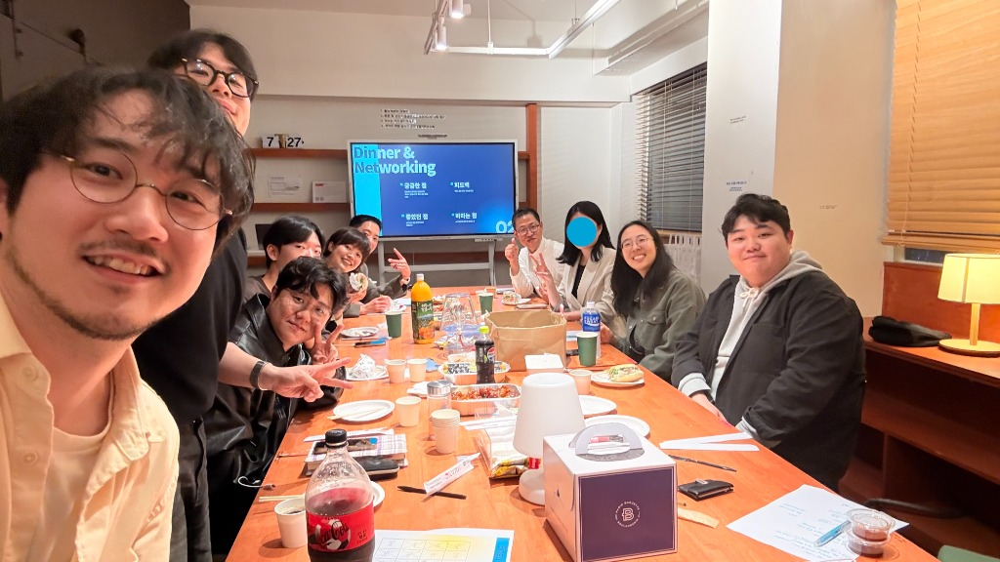
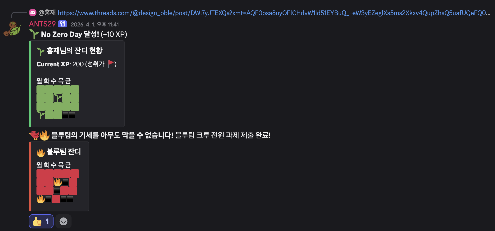
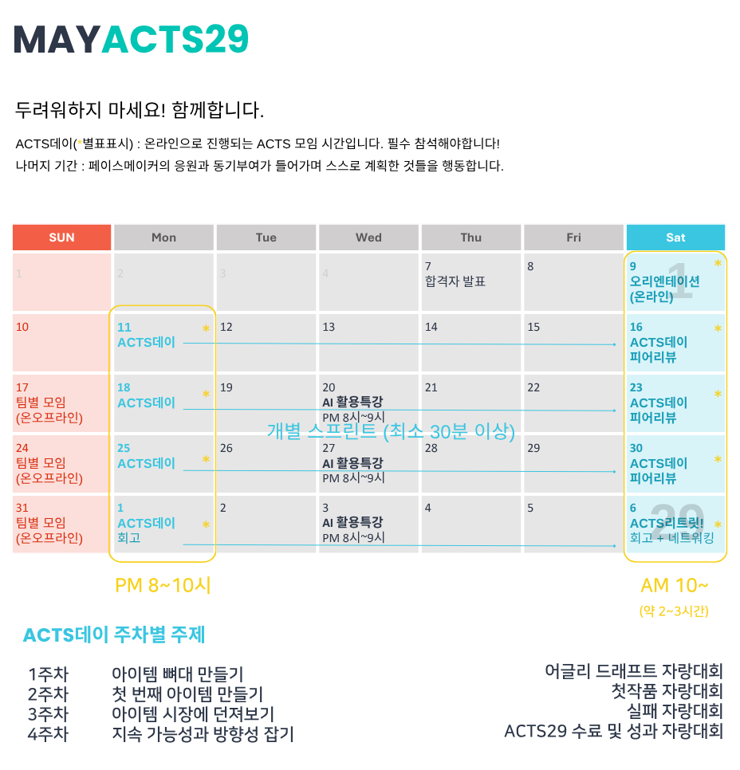

새로운 도전,
안전하게 시도해보는 커뮤니티

기존 기수 100% 29일 완주 🏃
단 한 명의 낙오자도 없었던 데이터가 증명합니다.
성공 공식이 아닌 '낙법(Safe Fail)' — 함께하는 안전한 운동장
어글리 드래프트 자랑대회
첫작품 자랑대회
실패 자랑대회
ACTS29 수료 및 성과 자랑대회
딱! 지금 이시기에 ACTS29가 필요합니다.
"특허/도메인만 사놓고 묵혀둔 지 N년째..." 막연한 두려움을 넘어, 첫 아이디어를 세상에 안전하게 던져볼 용기가 필요해요.
"혼자 하면 자꾸만 식어버리는 내 의지" 끝까지 포기하지 않도록, 안전하게 곁에서 함께 달려줄 든든한 가이드와 페이스메이커가 필요해요.
"내 아이디어를 실체로 만드는 방법을 몰라요" 머릿속에 맴도는 아이디어를 구체적인 기획과 작동하는 시스템으로 객관화해보고 싶어요.
"전혀 다른 분야의 사람들과 주고받는 다정한 자극" 다양한 데이터와 영감을 나누며, 불안감 없이 즐겁게 실행하고 도전하는 공동체가 고파요.
꿈의 도화선에 불을 붙이자!
기록과 템플릿
매일 성장 기록, 실행 가이드, 개인 브랜딩 기초
밀착 그룹핑
리더 및 동료 관리, 1:1 컨설팅, 커피챗
실전형 지식
AI 프론티어 실전 강의, 브랜딩 강의
이런 고민들은 싹- 매주 가이드만 따라하기만 해도 어떻게 접근해야하는지 배울 수 있어요.
엄선된 컨텍스트와 프롬프트, 에이전트가 계속 업데이트 되고 있습니다.
"벽에 막혔는데... 조언만 조금 받으면..."
같은 분야,
공통 관심사의 검증된 사람들과 자료가 모이는 곳. 당신도 도움을 주는 사람이 될 수 있어요.
디스코드 봇이 매일의 실행을 기록하고 응원합니다. 작은 잔디 한 칸이 모여 당신의 도전이 됩니다.
작은 실행이 쌓여 큰 변화를 만듭니다.

영민 님 | 본능으로만 부딪히던 운영 방식에서 벗어나, 제대로 된 '기획 시스템'을 도입한 건 제게 너무 신선하고 큰 충격이었습니다.
서영 님 | 머릿속에 두루뭉술한 아이디어만 가득했는데, 실제로 구동하게 만드는 구체적인 방법과 과정을 세세히 배울 수 있었습니다.
지영 님 | 1년간 진행하지 못했던 프로젝트를 ACTS29를 통해서 할 수 있게 돼서 너무 이 공동체에 감사합니다.
교건 님 | 이런 모임, 이런 발표 자리를 가진 것만 해도 값어치가 있었습니다. 이렇게 준비하셨을 줄 몰랐어요.
우찬 님 | 5년간 특허세만 내며 품고 있던 아이디어를, 29일 안에 할 수 있는 것에만 딱 집중해서 세상에 첫선을 보일 수 있었습니다.
혜연 님 | 저도 사이클을 계속 돌리며 하고 있습니다. 이 사람들이 여전히 함께 뛰고 있어요!
영민 님 | 본능으로만 부딪히던 운영 방식에서 벗어나, 제대로 된 '기획 시스템'을 도입한 건 제게 너무 신선하고 큰 충격이었습니다.
서영 님 | 머릿속에 두루뭉술한 아이디어만 가득했는데, 실제로 구동하게 만드는 구체적인 방법과 과정을 세세히 배울 수 있었습니다.
지영 님 | 1년간 진행하지 못했던 프로젝트를 ACTS29를 통해서 할 수 있게 돼서 너무 이 공동체에 감사합니다.
교건 님 | 이런 모임, 이런 발표 자리를 가진 것만 해도 값어치가 있었습니다. 이렇게 준비하셨을 줄 몰랐어요.
우찬 님 | 5년간 특허세만 내며 품고 있던 아이디어를, 29일 안에 할 수 있는 것에만 딱 집중해서 세상에 첫선을 보일 수 있었습니다.
혜연 님 | 저도 사이클을 계속 돌리며 하고 있습니다. 이 사람들이 여전히 함께 뛰고 있어요!
2기 피날레에서 직접 들은 생생한 이야기
특허세만 내면서 5년을 가슴에 묵혔던 아이디어. 와이프한테 항상 면박을 당했어요. "아무것도 안 할 거면 왜 세금까지 내고 있어?" 그런데 ACTS29에서 '29일 안에 할 수 있는 것만 딱 집중하자'는 마인드를 배웠고, 실제로 블라인드에 올려서 30명이 테스트해봤습니다. 처음으로 와이프한테 자랑했어요. "나 뭔가 만들었어!"
혼자 1년간 구상만 했던 프로젝트예요. AI랑만 대화하니까 사람이랑 너무 얘기하고 싶었어요. ACTS29에서 피드백을 받고 피봇팅도 하면서, 실제 도메인까지 구매하고 프로토타입을 만들었습니다. "돈이 안 돼도 최소 1년은 계속해보자"고 결심한 건 이 공동체 덕분이에요.
헬스장을 인수하면서 급하게 여성 전용으로 피봇해야 했어요. 시스템도 브랜딩도 막막했는데, 설문조사로 기존 회원 200명 중 71명 재등록 — 목표 140% 달성! "나도 좀 할 수 있겠구나" 하는 가능성을 봤던 계기가 제일 컸습니다.
보험 심사 기준이 복잡하고 분산돼 있어서, 의사들이 삭감 대응에 어려워해요. 그걸 플로우차트로 정리하는 서비스를 만들었더니 스레드 조회수 5천, 이메일 구독자 3명이 생겼어요. 발표 울렁증이 있었는데 너무 잘하셨다는 말을 들었습니다.
영상 포트폴리오를 하려다 커피챗에서 "이걸로 직업 삼을 수 있겠냐"는 질문에 솔직히 아닌 것 같아서, 좋아하는 그림으로 피봇했어요. 이 모임에서 발표를 해본 것 자체가 제겐 값어치가 있었습니다.
"10개 기수가 되면 100명이 모이겠네. 그때 정말 재밌을 거야."
피날레 당일, 크루들은 서로의 아이디어에 피드백을 주고
사업 콜라보를 논의하며 수료 이후에도 함께 뛰겠다고 약속했습니다.
스케줄은 이런 식으로 진행됩니다
가이드의 응원과 동기부여가 들어가며 스스로 계획한 것들을 행동합니다.
온라인으로 진행되는 ACTS 모임 시간입니다. 필수 참석해야합니다!

숫자가 증명합니다. 후회없는 선택이 될 수 있도록
당신의 꿈을 찾아주기로 결심한 점화장치팀이 끝까지 함께합니다.
연세대학교 최우등졸업
통계화학 박사 (네이처급 논문 12편)
2023 경기도 과학기술인 선정
과기부/중기부장관상
UCLA 초빙연구원
국내외 특허 15건
아기유니콘 스타트업 창업멤버
시리즈 Seed ~ B 투자 유치
상트페테르부르크대 전액장학 졸업
1,000명 규모 커뮤니티 빌딩 경험 多
청년취업사관학교 PM 교육
K-디지털 트레이닝 전문 강사
국내 에듀테크 1위 기업 C사 PM
에듀테크 IT센터 서비스 기획자
교육 AI 챗봇 시스템 총괄 PO
한국국제문화교류 진흥원(KOFICE)
긴 여정 끝에 찾은
꿈 그리고 삶의 정렬 노하우
뚫어내는 힘 아낌없이 전수합니다.
ACTS29 이그니션 시동걸기
처음부터 자기 사업을 해낸다는 것은 너무나 힘든 일입니다. 혼자서는 해보기 힘든 아이디어를 전문가의 코치와 동료들의 응원 아래 "시도" 해보는 한 달 프로그램입니다. 아이디어를 실제 상품으로까지 발전시켜 보세요!
네! 아이템의 제약은 두지 않습니다. 다만 불법 또는 반사회적 사업은 함께할 수 없습니다. 시도, 실패, 회고하며 점화하는 데 힘을 실어드립니다.
물론입니다! 아직 아이디어가 없어도 괜찮습니다. 1주차에 아이디어 발굴부터 함께 시작합니다. 막연히 '뭔가 해보고 싶다'는 마음만 있으면 충분합니다. 가이드와 동료들이 방향을 찾아가도록 함께 도와드립니다.
하루 정해진 양은 없습니다. 주 시작(ACTS데이)에 계획하고 주중에는 본인 일정에 맞춰 자율 수행합니다. 가이드와 동기부여가 동반됩니다.
저희는 강의가 아닙니다. 피봇팅 전문가가 '뚫어내는' 방법을 알려드리는 행동 공동체입니다. 수익 창출만이 유일한 목표인 곳은 아닙니다!
보증금 5만원은 한 달간의 의지를 사는 금액입니다.
90% 이상 참여시
보증금 100% 환급합니다.
새로운 도전, 안전하게 시도해보는 커뮤니티